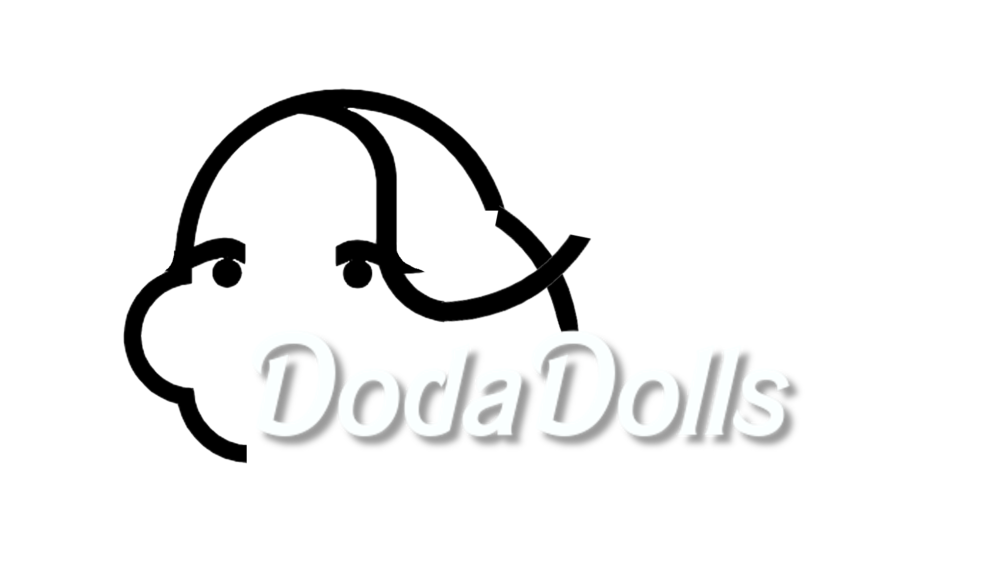

FUN IDEAS & INSPIRATION
On this page I want to let you in on some fun Barbie things I discovered online.
May it be remodelling or OOAK ideas, funny pictures, dioramas, DIYs, or my favourite
doll bloggers.
-
MASKS - Sadly 2020 happens to be a tough year. I hope you all take care of yourselves and wear a mask!
Barbie has also taken up the habit and many gorgeous dolls can be seen wearing masks on instagram.
-
MUMMY DIY - I found this crazy Barbie mummy on ebay. A seller called "Steinebock" was offering her as a vintage OOAK. The idea seems very cool!
You can probably try this out with various materials: fabric tape, cast / plaster strips, etc. It seems also a great idea for salvaging some broken or old dolls which look horrible and look better covered up.

-
CRAFTS BY FROGGY - Almost everybody in the doll community knows the amazing MyFroggyStuff and her sheer endless flow of DIY ideas for dolls. I picked one of her videos as an example on how to produce some cute quarantaine doll items at home. Enjoy!
-
TENNIS FAN - I grew up in a family of tennis fanatics. Therefore I have recently discovered the joy of getting tennis outfits for my dolls. I have some, but by far not all, so there is quite a list of items I still have to get. This year's release of the iconic Billie Jean King as part of the Inspiring Women series marked a very special moment in my collector heart. Finally a quality doll with realistic outfit and racket that is far from those rather cheaply executed playline tennis dolls of the past years!
A funny vintage ad I stumbled upon is this quite scary looking Dusty (not Barbie) doll. She seemed to have been quite the player and apparently came with a dark skinned colleague. Enjoy some blast from the past! (and let me know if you have any cool tennis outfits for sale)
By using this link for your purchases you support this page and my art. Thank you!